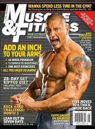

Projects and Reflections
In this part of my websote I will have my daily Hidden Genius reflections and some projects that I have worked on such as a dice game, Simon says, and a drum set simulator
Links to my Games and Simulators
Reflection 1
Quote:Building brotherhood through community norms.
Self Motivation
Key Terms
.solidarity
Community norms are important because they help everyone feel like they are part of a community. This is because if someone does something to hurt the community that person will be punished.
Reflection 2
Quote:No quote but the theme of hype masculinity
Key Terms
Hyper Masculinity
If people forget the culture they will eventually forget their ancestors, where they came from, and their identity. They will not be unqiue.
Reflection 3
Quote: “I prefer to be true to myself, even at the hazard of incurring the ridicule of others, rather than to be false, and to incur my own abhorrence.” -Fredrick Douglas
Key Terms
Allies
If you surround yourself with people you are not comfortable with you should find new people to surround yourself with.
Reflection 4
Quote: Being prepared
NA
Always be prepared because if something important comes up because if you are not prepared when something comes up you will miss out on an opportunity.Reflection 5
Quote: Self Motivation
NA
Today’s leadership topic was multiple things because we watched a video that had multiple Topics. So the topic that I chose to reflect on was self motivation. The video taught me that you Can’t always use physical things to motivate you and sometimes you have to internally motivate yourself.
Reflection 6
Quote: Supporting Buisnesses that dont support out communities
NA
<What I think that this quote means is that if we keep enabling the people who are keeping us down by buying their products we will stay oppressed until someone makes a product that uplifts our community.
Supporting Buisnesses that dont support our communties
Reflection 7
Quote: What does it mean to be a man?
NA
To be a man I think that it means tat you hold yourslef accountable for your actions and you are responsible and safe. I think also that being a man means that you are of the male gender but being a man has no real definition because people could have different definitions of what being a man is.
Reflection 8
Quote: “The most disrespected person in America is the Black woman, the most unprotected person in America is the Black woman, the most neglected person in America is the Black woman.”
NA
The quote this morning is about black women being the most disrespected women in the united States. This is true because first black people already disrespected and women are not as Respected as men are in this country and black women because they are both black and women They are very disrespected.
Why are black women disrespected
Reflection 9
Quote: What does it mean to be the best me?
NA
I think what being a man means to me is being accountable for my actions be responsible and Safe. I think also being the best me I can be is being an overall nice person to everybody I meet Including people that I don’t like very much and not letting their negativity rub off on me.
Reflection 10
Quote: How do you feel about being in the Hidden Genius Project?

NA
I feel grateful for having this opportunity and being able to participate in this program. If this was a regular summer I would be at home not really doing anything so I am happy that I can do something meaningful during your summer.
Reflection 11
Quote: Why is Gaming important?
NA
Gaming is important because it can relieve stress but it also has it’s adverse effects such as addiction. I think gaming is good in moderation but if you use it too much you could get addicted or ruin your eyes if you look at the screen for too long.
Reflection 12
Quote: “If you can control a man's thinking you do not have to worry about his action. When you determine what a man shall think you do not have to concern yourself about what he will do. If you make a man feel that he is inferior, you do not have to compel him to accept an inferior status, for he will seek it himself. If you make a man think that he is justly an outcast, you do not have to order him to the back door. He will go without being told; and if there is no back door, his very nature will demand one.” Carter G. Woodson
NA
This quote means that if you can control someone mentally they will not be able to do anything physically. So if someone is put in chains physically after the chains are taken off people will still have mental chains.
Reflection 13
Quote: How do I treat the women in my life?

NA
I think that I treat the women in my family with respect but if a woman that I don’t know is Projecting negative energy toward me I will reflect it back at them. But I will stay respectful to The women in my family. These morals that I have would go the same for men.
How to treat women in your life
Reflection 14
Quote: Acknowledging my Ancerstors
NA
The morinings topic is about what our ancestors had to go through with slavery and how it manifests in todays police force. When slavery was still there masters would take the slaves and give them new names and give them overseers but now the overseers are officer and the names are identification number in prison.
Reflection 15
Quote: “If you want to go quickly go alone. If you want to go far go together.”-African Proverb
NA
If you are traveling somewhere alone you will go faster but when you are with other peole others can help you when you are in tough situations.
Reflection 16
Quote: Seeing beyond skin color
NA
I think this quote means that people are more similar than they seem. All humans perform simple Essential tasks such as eating and sleeping. Everyone is human and we should stop seperating Ourselves on small differences like skin colour.
Reflection 17
Quote: “If you can control a man's thinking you do not have to worry about his action. When you determine what a man shall think you do not have to concern yourself about what he will do. If you make a man feel that he is inferior, you do not have to compel him to accept an inferior status, for he will seek it himself. If you make a man think that he is justly an outcast, you do not have to order him to the back door. He will go without being told; and if there is no back door, his very nature will demand one.”

NA
This quote means that if you can control someone mentally they will not be able to do anything physically. So if someone is put in chains physically after the chains are taken off people will still have mental chains.
Whips and chains to whips and chains